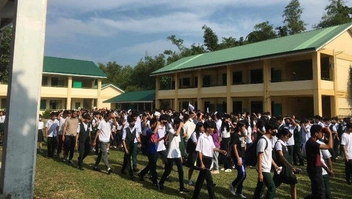
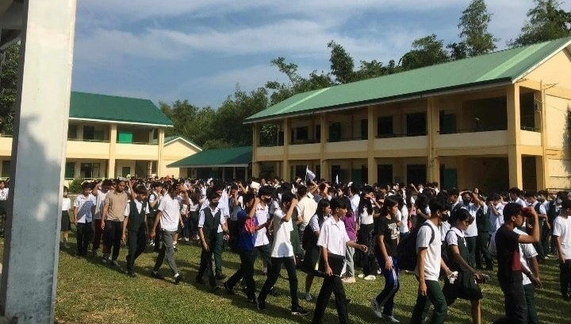

Camarines Norte is directly exposed to the Pacific, making it vulnerable to strong typhoons that bring destructive winds, heavy rain, coastal flooding, and storm surge. Coastal and low-lying barangays are most at risk.


Flooding occurs in low-lying and river-adjacent barangays such as Matnog, Mampili (Basud), Tigbinan & Fundado (Labo), and Gahonon & Lag-on (Daet). Sudden rise in water levels can trap residents if they delay evacuation.


Earthquakes can strike without warning. Even if Camarines Norte is not on a major fault line, shaking from nearby faults can still damage older structures and trigger landslides in mountainous barangays.
 

Prolonged heavy rains soften and weaken soil, especially in sloped areas like Larap & Motherlode (Jose Panganiban), Itok & Catabaguangan (Capalonga), and upland sitios in Labo. Landslides can bury homes and block roads.

Storm surge happens when strong winds push seawater inland, causing sea levels to rise rapidly. This can flood coastal houses, destroy roads, and carry debris far from the shoreline.